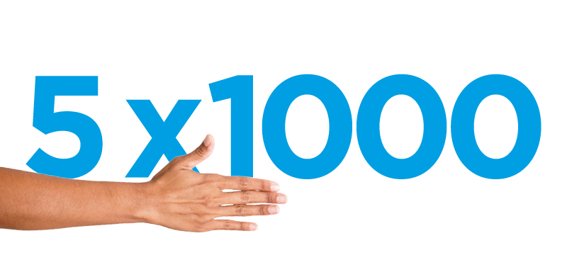
Tocca con mano,
dona con fiducia.
Codice
fiscale
97905980013
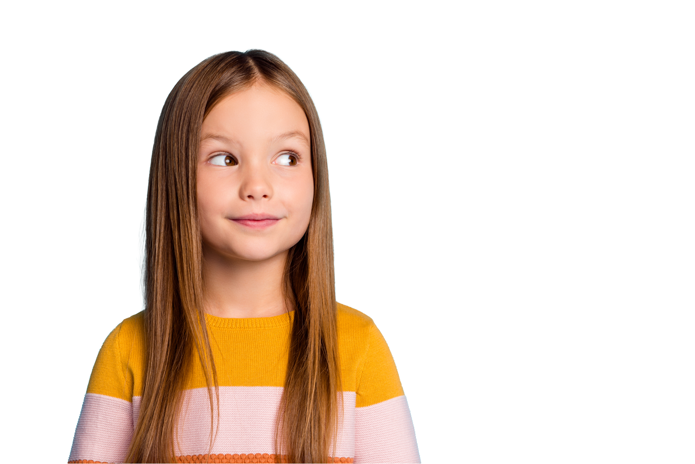
Ogni giorno il Cottolengo accoglie anziani soli, persone con disabilità, bambini e famiglie in difficoltà. Bastano pochi euro per fare molto.
Con 35 € offri 7 pasti caldi a chi non ha nulla.
Dona 35 € adessoLa tua donazione è detraibile al 30%: 35 € te ne costano davvero solo 24,50 €.
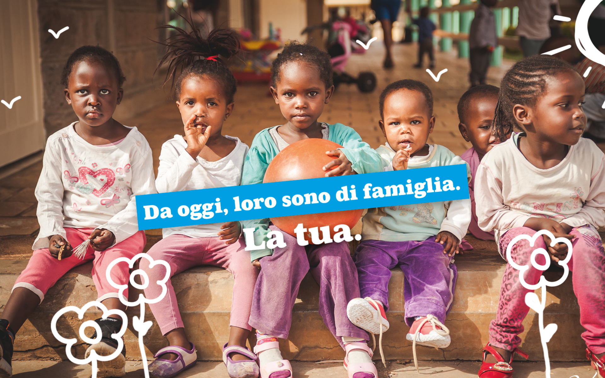
Accompagna la crescita di un bambino: scuola, cibo e cure, mese dopo mese.
Oppure chiama 348 8989163 — Sr Mary Soshiyat

Una firma nella dichiarazione dei redditi vale cure e accoglienza per tanti. Non ti costa un euro.
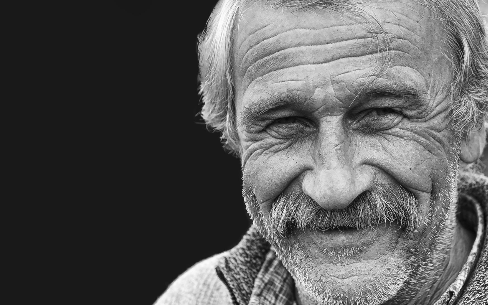
Ricorda una persona cara con un gesto d'amore che continua a vivere.
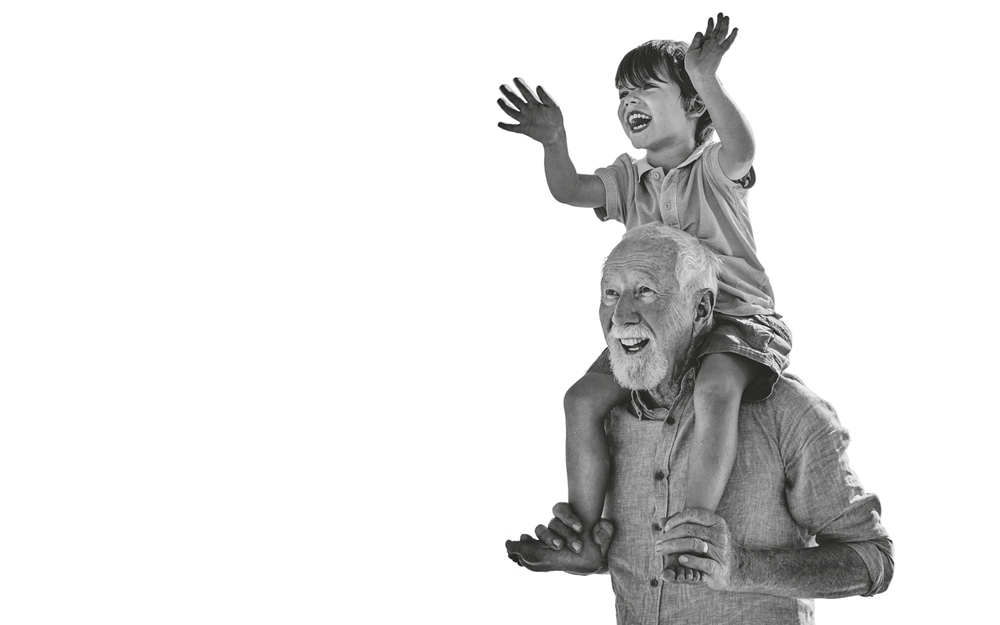
Il loro futuro è la tua eredità più grande. Un lascito, anche piccolo, resta per sempre.
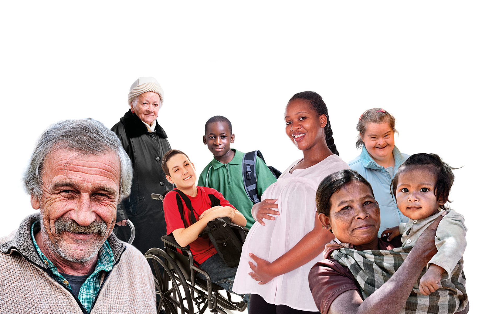
Dona il tuo tempo: al fianco degli ospiti, nelle attività e negli eventi della Piccola Casa.
I progetti in evidenza, scelti tra tutti quelli attivi. Scegli quello che senti più tuo.
Dietro ogni donazione c'è un volto. Questi sono i nostri ospiti, la nostra famiglia.
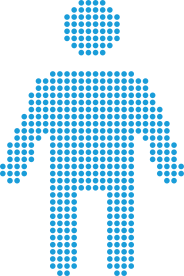
Accolti e curati nelle nostre case quando non hanno più nessuno, in Italia e nel mondo.
Oltre 2.000 anziani accolti ogni anno
Esplora progettiAssistenza, riabilitazione e una vera famiglia, ogni giorno della vita.
Più di 1.000 persone seguite ogni giorno
Esplora progetti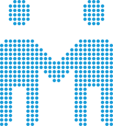
Sostegno a distanza, scuola e aiuto alle mamme e alle famiglie in difficoltà.
Oltre 500 bambini sostenuti a distanza
Esplora progetti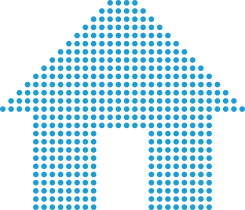
Cure mediche, riabilitazione e assistenza per chi non potrebbe permettersele.
97.000 pasti caldi serviti ogni anno
Esplora progettiNumeri indicativi a scopo di esempio: da sostituire con i dati reali dell'Opera. I link "Esplora progetti" puntano all'archivio unico dei progetti con il filtro "chi aiuti" già applicato (da collegare in fase WordPress).
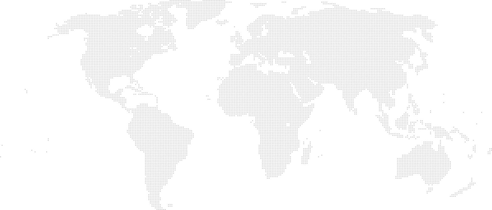
Dalla Piccola Casa di Torino l'aiuto arriva in 4 continenti. Esplora dalla mappa o dalle schede qui a lato.
Vogliamo che tu sappia sempre come viene usato il tuo aiuto.
Ecco come vengono impiegati i fondi raccolti.*
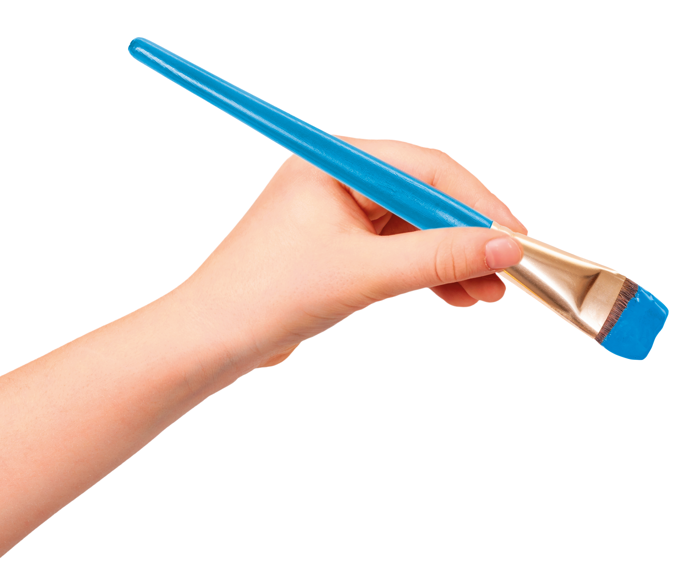
Pasti, cure mediche, accoglienza e missioni in 4 continenti.
Le strutture che ogni giorno tengono le porte aperte.
Per far conoscere i progetti e trovare nuovi amici.
* Dati indicativi a scopo di esempio: da sostituire con i valori del bilancio sociale.
Con il sostegno e la collaborazione di
«Qui non sono mai stato un numero. Sono stato, da subito, uno di famiglia.»
— Un ospite della Piccola Casa, Torino (testo placeholder)
«Ho trovato una casa quando pensavo di non averne più una. Grazie a chi sostiene tutto questo.»
— Maria, ospite della casa di riposo (testo placeholder)
«Con una piccola donazione mensile so di dare un pasto caldo a chi non ha nulla. È poco per me, tanto per loro.»
— Giulia, donatrice da 3 anni (testo placeholder)
«Da volontario ho visto con i miei occhi dove va l'aiuto: in cura, ascolto e dignità per ogni persona.»
— Paolo, volontario cottolenghino (testo placeholder)